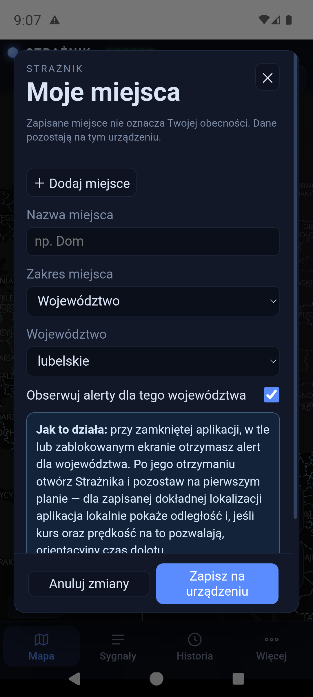
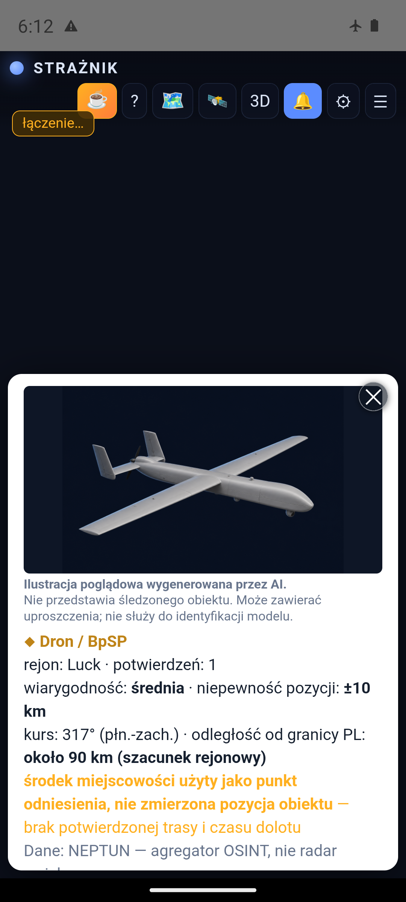
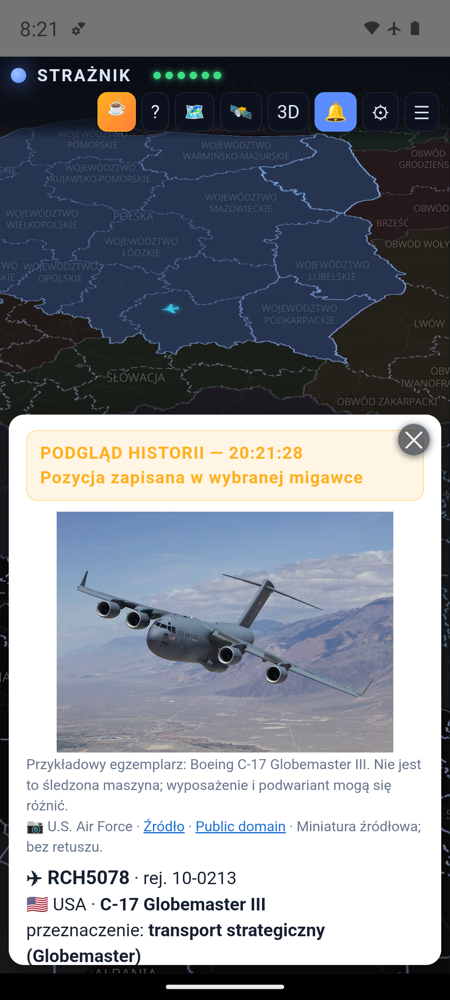
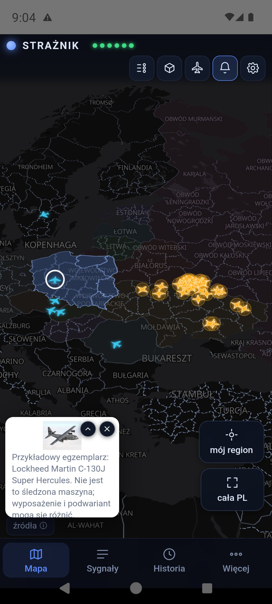
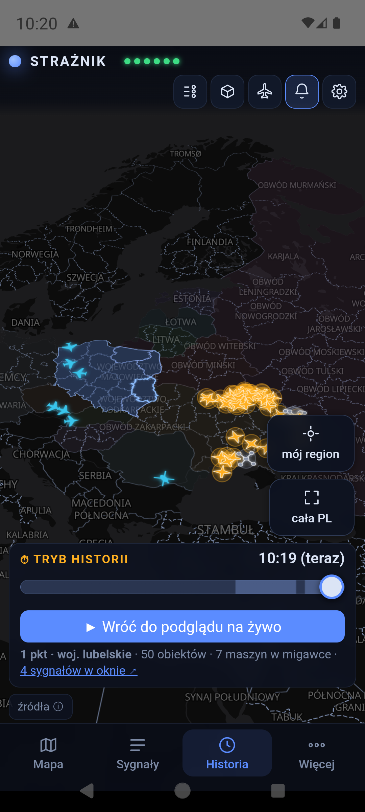
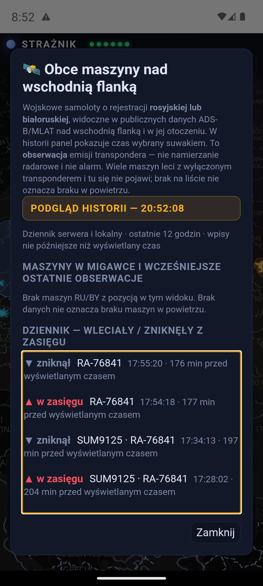

Czym jest Strażnik
Serwer zbiera dane i oblicza punktację, a aplikacja pokazuje mapę, źródła i historię. Android otrzymuje alarmy przez push. Nie potrzebujesz konta ani własnego serwera.
Połączenie źródeł pomaga ocenić sytuację. Odpowiedni komunikat oficjalny albo wystarczająco poważny bliski obiekt mogą samodzielnie osiągnąć próg; same artykuły RSS nie mogą. Wynik jest wskaźnikiem aplikacji, a nie prawdopodobieństwem uderzenia.
1. Instalacja i kolejne aktualizacje
- Pobierz najnowszy Straznik.apk na telefon z Androidem.
- Otwórz plik w folderze Pobrane. Jeśli Android poprosi, zezwól tej przeglądarce lub menedżerowi plików na instalowanie aplikacji z tego źródła.
- Zatwierdź instalację i uruchom Strażnika. Pozwól systemowi przeskanować plik; nie wyłączaj Play Protect.
- Zezwól na powiadomienia, wybierz województwo i sprawdź zgodę na pełny ekran.
Jeśli aplikacja GitHub przechwytuje link i pobieranie staje, otwórz link w przeglądarce. Dostępna jest też kopia APK w repozytorium.
Aktualizacja z poziomu aplikacji
Od 1.7.23 Strażnik sprawdza dostępność wydania przy każdym uruchomieniu i przy powrocie aplikacji na wierzch (nie częściej niż co 30 minut). Wcześniej sprawdzał raz na dobę, więc poprawka mogła czekać na użytkownika prawie dobę. W oknie aktualizacji zobaczysz wersję i opis zmian. Możesz też wejść w ⚙ → Aplikacja → Sprawdź aktualizacje.
Przy zwykłej, niekrytycznej aktualizacji wybierz Później, aby zamknąć komunikat na bieżącą sesję. Gdy wybierzesz instalację, aplikacja pobierze APK i sprawdzi jego SHA-256, a Android poprosi o zatwierdzenie. Aktualizacja nadal wymaga pobrania pliku; nie musisz jednak szukać go ręcznie.
Instaluj nowe wydanie na istniejące, bez odinstalowywania — zachowasz ustawienia. Co zmieniło się w każdej wersji, opisuje historia zmian. Publikowany plik jest podpisanym wydaniem release. Po aktualizacji sprawdź zgody na powiadomienia i pełny ekran.

2. Moje miejsca, język i zgody
Otwórz ⚙ → zakładka Moje miejsca → Otwórz Moje miejsca. Możesz zapisać do 8 profili, np. Dom, Praca i Wyjazd. Dla każdego wybierasz województwo oraz opcjonalnie dobrowolną jednorazową lokalizację. Obecne powiadomienia są kierowane według województwa.
Przełącznik Obserwuj alerty tworzy subskrypcję dla województwa. Kilka miejsc w tym samym regionie daje jedną subskrypcję. Wyłączenie obserwacji nie usuwa profilu. Pierwsze zapisane miejsce jest regionem startowym mapy; stary wybór województwa po aktualizacji zostaje przeniesiony do profilu „Dom”.
Jednorazowa lokalizacja działa wyłącznie po dotknięciu przycisku i zapisuje punkt, dokładność oraz czas odczytu. Nie ma śledzenia w tle ani internetowego wyszukiwania adresów. Punkt można usunąć osobno.
Dwa poziomy działania: gdy aplikacja jest zamknięta, zminimalizowana albo ekran jest zablokowany, powiadomienie dotyczy województwa. Po jego otrzymaniu otwórz Strażnika i pozostaw go na pierwszym planie. Dla zapisanej dokładnej lokalizacji aplikacja obliczy na urządzeniu odległość do widocznego obiektu. Orientacyjny czas pokaże tylko wtedy, gdy zna rzeczywistą prędkość i kurs prowadzi w stronę punktu; w przeciwnym razie wyraźnie poda, że ETA nie można wiarygodnie oszacować.
To obliczenie nie jest osobnym alarmem odległościowym i nie działa niezawodnie w tle. Zakłada niezmienny kurs, może się zmienić wraz z nowymi danymi i nie zastępuje komunikatów RCB, RSO ani poleceń służb.
Polski / English
Wybór języka od razu zmienia podgląd ustawień. Zapisz zatwierdza wybór i odświeża aplikację; Anuluj zachowuje poprzedni język. Angielska wersja obejmuje interfejs, opisy obiektów i samolotów oraz nazwy na mapie. Gdy brak nazwy angielskiej, może pozostać nazwa źródłowa. Cytowane treści zewnętrznych komunikatów nie muszą być przetłumaczone.
Powiadomienia
W ustawieniach sprawdź powiadomienia systemowe, kanały alarmów i zgodę na alarm pełnoekranowy. Dostępny jest również skrót do wyłączenia optymalizacji baterii dla aplikacji. Działanie zależy od ustawień i ograniczeń telefonu.
{kind=link}

3. Mapa i nowe ikony
Przesuwaj mapę palcem, powiększaj dwoma palcami i dotykaj obiektów, aby otworzyć szczegóły. Kolor województwa odzwierciedla punktację: poniżej 2 pkt — niebieski, od 2 pkt — żółty, od 4 pkt — czerwony. W widoku 3D wysokość bryły rośnie z wynikiem.
Obiekty NEPTUN mają teraz różne kształty, nie tylko kolory. Samoloty i śmigłowce ADS-B zachowały swoje sylwetki. Legenda nie zawiera już osobnej sekcji odcieni państw.
| Obiekt | Jak go rozpoznać |
|---|---|
| Dron / BpSP | Żółta sylwetka płatowca. |
| Shahed | Pomarańczowe skrzydło delta. |
| FPV | Cztery wirniki; lokalny dron, bez punktów w tym modelu. |
| Dron rozpoznawczy | Jasna sylwetka z długimi skrzydłami. |
| Rakieta manewrująca | Czerwony korpus ze skrzydłami. |
| Rakieta balistyczna | Różowy, smukły grot z płomieniem. |
| KAB | Żółta sylwetka bomby kierowanej. |
| MiG-31K — nosiciel | Fioletowa sylwetka samolotu ze źródła NEPTUN. |
| Obiekt nierozpoznany | Szary romb ze znakiem zapytania. |
Okrąg wokół obiektu oznacza niepewność pozycji (±km). Większy okrąg oznacza większy obszar niepewności, nie większy zasięg rażenia. Przerywana linia pokazuje ślad tylko wtedy, gdy źródło przekazuje pozycje nadające się do obserwacji ruchu. Punkt oznaczony jako „przybliżony rejon zgłoszenia” nie jest trasą.

Podgląd obiektu i zdjęcia
Karta obiektu podaje typ, rejon, liczbę potwierdzeń, wiarygodność, niepewność pozycji, kurs i odległość od Polski. ETA pojawia się tylko dla pozycji nadającej się do takiego obliczenia. Pole źródłowe confirmed może potwierdzać meldunek, nie dokładność współrzędnych. Jeżeli NEPTUN oznaczy rejon jako przybliżony albo Strażnik rozpozna kanoniczny punkt środka miejscowości, odległość jest zaokrąglona do dziesiątek kilometrów, a aplikacja nie przesuwa sztucznie znacznika, nie rysuje pozornej trasy i nie pokazuje ETA. Nazwa miejscowości może opisywać kierunek lub cel raportu, a nie położenie obiektu. Ilustracje AI są poglądowe i nie służą do rozpoznawania modelu.
Po dotknięciu samolotu ADS-B zobaczysz znak wywoławczy, rejestrację, kraj, model, przeznaczenie, wysokość, prędkość i kurs, zależnie od dostępnych danych. Śledź trasę pozwala obserwować zebrany ślad. Brak transpondera lub odbioru oznacza brak pozycji — mapa nie pokazuje wszystkich maszyn wojskowych.
Fotografie modeli (1.7.19): karta samolotu lub śmigłowca korzysta z lokalnej biblioteki prawdziwych zdjęć. To przykładowy egzemplarz, nie śledzona maszyna; wyposażenie i podwariant mogą się różnić. Gdy dostawca podaje znany kod typu bez opisu wariantu, aplikacja pokazuje sprawdzony przykład rodziny zamiast pustego miejsca. Wyraźnie sprzeczny opis nadal blokuje zdjęcie. Biblioteka obejmuje też Boeing 737-800. Pod fotografią znajdziesz autora, źródło i licencję.
{kind=link}

confirmed, ale współrzędne odpowiadają środkowi Łucka. To test interfejsu, nie bieżący obiekt ani alarm.
{kind=link}

{kind=link}

4. Przyciski i zamykanie paneli
| Przycisk | Działanie |
|---|---|
| STRAŻNIK + sześć diod | Status NEPTUN, Alarmy UA, ADS-B, RSS, RCB i PAŻP. Zielona dioda oznacza dostępność danej warstwy, a nie potwierdzenie bezpieczeństwa. Nazwa aplikacji udostępnia objaśnienie również po dotknięciu na telefonie. |
| ☕ / ? | Dobrowolne wsparcie autora / opis działania i funkcji. |
| Legenda / 🗺️ | Znaczenie ikon, niepewności i progów punktowych. |
| 🛰️ | Widok obcych maszyn i zarejestrowanych obserwacji. |
| 3D / 2D | Przełączanie mapy przestrzennej i płaskiej. |
| 🔔 / ⚙ / ☰ | Powiadomienia / ustawienia / panel sygnałów. |
| ⏱ / ◎ / ⤢ | Historia 12 godzin / powrót do mojego regionu / cały obszar. |
| Pobierz aplikację / Instrukcja | Przyciski dostępne na stronie WWW; nie są wyświetlane w APK. |
Panel sygnałów nie zwija się po kilku sekundach. Zamkniesz go krzyżykiem, zakładką Mapa lub dotknięciem mapy poza panelem. Legenda i pozostałe panele również obsługują kliknięcie poza swoim obszarem. W ustawieniach użyj Zapisz, aby zatwierdzić zmiany.
5. Panel sygnałów
Zakładka Sygnały na dolnym pasku otwiera karty województw. Dotknij regionu, aby zobaczyć źródła jego wyniku. Twój region ma obwódkę i podpis „mój region”. Panel zawiera sygnały z okna 60 minut, obiekty blisko granicy oraz publiczne obserwacje lotnictwa wojskowego.
Sygnały są uporządkowane według faktycznie zaliczonego wkładu. Widoczna liczba uwzględnia limity źródła i wygaszanie w czasie; przekreślona wartość wyjaśnia, dlaczego nie zaliczono pełnej punktacji. Artykuł rozpoznany jako powtórzenie świeżego Alertu RCB albo materiał historyczny lub opis następstw pozostaje widoczny, lecz ma 0 dodatkowych punktów i odpowiednią etykietę. Różne ID tego samego typu w identycznym punkcie rejonowym są w jednym oknie traktowane jako aktualizacje jednego niepewnego zdarzenia, chyba że źródło poda wiarygodną liczbę obiektów.
Wpis Przeniesienie / SPILLOVER wyjaśnia wkład z innego województwa. Tytuł medialny prowadzi do źródła. Sprawdź jego treść i czas publikacji.
Kamery w regionie prowadzą do dostępnych podglądów otoczenia. To kamery naziemne, nie narzędzie wykrywania obiektów powietrznych.

6. Historia 12 godzin
Przykład: skąd wzięło się 2,2 pkt
Na przekazanym przez użytkownika zrzucie Lubelskie ma żółty poziom, a panel pokazuje wkład komunikatu RCB (RSO) oraz obserwacji NEPTUN. Pasek na dole wskazuje cztery sygnały — nie wszystkie mieszczą się jednocześnie na widocznym fragmencie listy.
Etykieta PODGLĄD HISTORII — 15:11 (−10 min) oznacza odtwarzanie wcześniejszej chwili. To przykład historyczny, nie bieżący alert. Wartości na zrzucie nie są tabelą aktualnych wag ani dowodem czasu doręczenia powiadomienia.

Dotknij zakładki Historia na dolnym pasku i przeciągaj suwak w lewo lub w prawo. Pasek nazywa tryb wprost: ⏱ TRYB HISTORII. Mapa oraz panel pokazują wybraną chwilę, nie bieżący stan. Etykieta podaje godzinę i liczbę minut wstecz. Przycisk ▶ Wróć do podglądu na żywo przywraca aktualny widok. Suwak w 1.7.23 jest wyraźnie większy: 44 px pola dotyku i 28 px uchwytu.
Pakiet historii pobierany jest na urządzenie, a przewijanie korzysta z lokalnego bufora. Każdy ruch palca nie wysyła osobnego zapytania do serwera. Migawki powstają zwykle co 2 minuty: to odtwarzanie zapisanych próbek, nie ciągłe nagranie radarowe. Długość dostępnej historii zależy od ciągłości zapisu i źródeł.
Spójny czas samolotów (1.7.17): mapa, lista maszyn, panel obcego lotnictwa i szczegóły samolotu korzystają z tej samej wybranej chwili. Późniejsze zdarzenie nie może pojawić się we wcześniejszym widoku. Przycisk ▶ Wróć do podglądu na żywo przywraca dane bieżące.
Przygaszona obca maszyna to ostatnia zapisana pozycja, uzupełniająca lukę między migawkami. Pokazujemy ją tylko na podstawie wcześniejszego wpisu dziennika, nie starszego niż 2,5 minuty względem wybranej chwili. Karta podaje czas zapisu i zaznacza brak w migawce. Wpis „zniknął” opisuje utratę obecności w danych, nie lądowanie ani zestrzelenie; jego czas nie musi być czasem ostatniej emisji transpondera. Licznik rozdziela maszyny w migawce od ostatnich obserwacji.
Panel 🛰 pobiera niewielki dziennik serwera z ostatnich 12 godzin, także z czasu, gdy aplikacja była zamknięta, i łączy go z lokalnymi wpisami bez powielania tych samych przejść. Wyświetla tylko wpisy do wybranej chwili. Odświeżanie jest ograniczone do najwyżej jednego zapytania na minutę, nie jest wykonywane przy każdym ruchu suwaka. Niedostępność dziennika lub lokalny tryb awaryjny są opisane w panelu. Te obserwacje nie dodają punktów.
{kind=link}

{kind=link}

Sygnał w oknie 60 minut może pozostać na liście po zniknięciu obiektu z mapy. To różne rzeczy: lista opisuje zarejestrowane zdarzenia, mapa — pozycje dostępne w konkretnej migawce. NEPTUN usuwa wpis komunikatem źródłowym lub zastępuje listę aktywnych obiektów; sama przyczyna usunięcia nie jest przekazywana. Zniknięcie nie dowodzi zestrzelenia, rozbicia ani opuszczenia rejonu. Nowy identyfikator w tym samym przybliżonym punkcie może oznaczać ponowne zgłoszenie, nie nowy fizyczny obiekt. Dla części obcych maszyn aplikacja może pokazać przygaszoną ostatnią obserwację, odróżnioną od bieżącej pozycji.
7. Żółty i czerwony alarm


Te dwa obrazy dokumentują wcześniejsze testy, nie bieżące zagrożenie. Teksty, liczby i odległości na nich są przykładami testowymi, a nie aktualną tabelą punktacji. Zrzut nie oddaje dźwięku ani migania ekranu.
| Wynik | Sygnalizacja |
|---|---|
| Poniżej 2 pkt | Informacje pozostają na mapie i w panelu, bez alarmu progowego. |
| Od 2 do poniżej 4 pkt | Żółty poziom „PODWYŻSZONA UWAGA”: krótki sygnał uwagi i powiadomienie, które może pojawić się jako heads-up. |
| Od 4 pkt | Czerwony „WYSOKI PRIORYTET”: syrena, wibracja i alarm pełnoekranowy, jeśli system i zgody na to pozwalają. Potwierdzenie na ekranie wycisza alarm. |
W ⚙ → Dźwięk dostępne są Test: uwaga, Test: syrena oraz Test: pełny alarm. To testy lokalne na Twoim urządzeniu. Nie potwierdzają dostarczenia push z serwera. W 1.7.15 podniesiono poziom czerwonej syreny; rzeczywista głośność zależy również od telefonu i ustawień dźwięku.
8. Push, strona WWW i tryb awaryjny
Android: serwer wysyła push przez Firebase dla wybranego województwa. Mechanizm jest przeznaczony do działania również przy zamkniętej aplikacji i zablokowanym ekranie. Wymaga łączności i poprawnej konfiguracji telefonu. „Wymuś zatrzymanie” w ustawieniach Androida może blokować odbiór do ponownego uruchomienia aplikacji. Nie ma już usługi „nasłuch aktywny”.
Przeglądarka: sama zakładka z adresem nie włącza ostrzegania. Otwarta karta może pokazywać i odtwarzać alarmy; dźwięk wymaga interakcji użytkownika. Odbiór przy zamkniętej karcie wymaga oddzielnej zgody i subskrypcji Web Push oraz wsparcia przeglądarki i systemu. Web Push obejmuje tylko województwa włączone przełącznikiem Obserwuj alerty; po zmianie miejsc przypisanie odświeża się przy otwarciu strony. Zachowanie nie jest identyczne z natywnym pełnoekranowym alarmem Androida.
Awaria serwera: po nieudanych próbach połączenia otwarta aplikacja uruchamia wbudowany silnik. Nadal potrzebuje internetu do źródeł. W obecnym kodzie sprawdza powrót serwera co minutę i po odzyskaniu połączenia zatrzymuje własne odpytywanie. W czasie aktywnego alarmu odkłada przełączenie. Tryb awaryjny nie zapewnia zastępczego całodobowego monitorowania po zamknięciu aplikacji.
Zapowiedź testów może pojawić się jako komunikat do potwierdzenia i zamknięcia. Sam komunikat nie jest dowodem działania ścieżki alarmowej.
9. Skąd biorą się punkty
Podstawowe okno wynosi 60 minut. Przez pierwsze 30 minut sygnał zachowuje pełną wagę, następnie maleje ona liniowo do zera. Każda klasa źródła ma limit wkładu; kolejna obserwacja tego samego toru NEPTUN ani nowe ID w identycznym punkcie rejonowym nie są automatycznie sumowane jako nowy obiekt.
| Źródło | Co jest uwzględniane | Waga / limit |
|---|---|---|
| NEPTUN — obiekty | Typ, liczba obiektów w zgłoszeniu, odległość od granicy, kurs, wiarygodność, potwierdzenia, stan obserwacji i jakość pozycji. Rejon źródłowy ma mnożnik ×0,6, a rozpoznany środek miejscowości ×0,5. | Łącznie maks. 8 pkt |
| Alarmy UA | Alarm w wybranych obwodach zachodniej Ukrainy. | 1 pkt |
| Media | Obiekt powietrzny i zdarzenie dają 1 pkt. Jednoznaczna bieżąca relacja operacyjna — np. alarm powietrzny, syreny, poderwanie lotnictwa, zestrzelenie lub upadek obiektu — daje 1,5 pkt. Sama fraza „naruszenie przestrzeni powietrznej” daje 1 pkt. Cała klasa RSS ma limit 1,5 pkt, dlatego same artykuły nie uruchamiają żółtego. Ćwiczenia, materiały historyczne, następstwa prawne i powtórzenie świeżego Alertu RCB pozostają widoczne z wkładem 0 pkt; sama wzmianka o RCB nie zeruje nowej informacji. | 0 / 1 / 1,5 pkt; limit 1,5 |
| RCB / RSO | Odpowiednie opublikowane komunikaty o zagrożeniach powietrznych. Czas publikacji w źródle może różnić się od doręczenia SMS. | 2 pkt, limit 2 |
| ADS-B | Co najmniej 3 maszyny i ponad dwukrotność tła dla tej pory doby, zbieranego przez 7 dni. | 1 pkt, limit 1 |
| PAŻP | Rzadkie ADHOC/R/NPZ/D od ziemi do poziomu lotu; filtry rutyny i powtarzania designatorów. Sama aktywacja nie dowodzi zagrożenia militarnego. | 0,5 pkt, limit 1 |
| Media bałtyckie | Incydenty LT/LV/EE jako kontekst dla Podlaskiego i Warmińsko-Mazurskiego. Rozpoznane odwołanie wygasza ten sam incydent. | 1 pkt |
| Strefy sąsiadów | Wybrane restrykcje LT/EE i północnej Rumunii (od 47°N). Łotewskie strefy i oficjalne komunikaty LV są na etapie obserwacji bez punktów. | 0,3 pkt, limit 0,6 |
Obiekty: płynna zależność od odległości
Wagi typów: balistyczna 3,0; MiG-31K 2,6; manewrująca 2,4; KAB 1,8; Shahed 1,4; dron 1,1; rozpoznawczy 0,5; FPV 0. Waga jest mnożona m.in. przez pierwiastek z liczby obiektów i współczynniki jakości danych oraz kursu.
Odległość jest interpolowana płynnie przez punkty: 0 km ×1,7; 15 ×1,6; 45 ×1,3; 80 ×1,0; 110 ×0,7; 150 ×0,4; 200 ×0,25; 250 ×0,1. Od 250 km zwykły wkład wynosi zero. Przy nieznanym kursie punktowanie jest ograniczone do bliskich obiektów i obniżone. Dla rakiet i MiG-31K do 60 km, z co najmniej dwoma potwierdzeniami, działa minimum 2 pkt skalowane współczynnikiem kursu.
Czas dolotu
Karta pokazuje szacunek do granicy Polski oraz do granicy wybranego województwa, nie do adresu użytkownika. ETA jest wyłączone, gdy NEPTUN oznaczy pozycję jako przybliżoną lub Strażnik rozpozna punkt środka miejscowości. Dla pozostałych pozycji aplikacja korzysta z prędkości źródłowej, gdy jest dostępna, albo typowej dla klasy. Odejmuje bufor 2,5 minuty wynikający z wcześniejszych pomiarów opóźnienia. Bufor nie pokrywa każdej możliwej zwłoki.
Aktualny mechanizm progowy ETA odnosi się do granicy Polski: tylko dla pozycji nieoznaczonej jako przybliżona, przy znanym kursie, co najmniej dwóch potwierdzeniach i średniej lub wysokiej wiarygodności może podnieść wkład obiektu do 2 pkt przy ≤10 min lub 4 pkt przy ≤5 min. Nie dolicza drugiego kompletu punktów za ten sam obiekt.
Przeniesienie na sąsiednie województwa
Wynik co najmniej 2 pkt z sygnałów innych niż regionalny Alert RCB może wnosić 40% do pierwszego kręgu sąsiadów, 16% do drugiego itd., do limitów algorytmu. Oficjalny komunikat RCB/RSO nie jest przenoszony: jego obszar wskazał już nadawca, a ten sam komunikat może być wydany osobno dla kilku województw. To reguła kontekstu regionalnego, nie prognoza trasy obiektu. Wkład jest opisany w panelu.
Samo przeniesienie nie wysyła powiadomienia. Województwo, które nie ma ani jednego własnego sygnału, widzi podniesiony poziom na mapie i w panelu, ale telefon nie dzwoni — jedno zdarzenie u sąsiada nie ma budzić kilku regionów naraz. Powiadomienie rusza, gdy w Twoim województwie pojawi się własny sygnał.
10. Co obejmuje obecne wydanie
Polski i angielski
Podgląd języka przed zapisaniem, angielskie opisy maszyn i geograficzne etykiety mapy.
Rozpoznawalne ikony
Oddzielne sylwetki dronów, rakiet, KAB i obiektów nieznanych, aktualna legenda i podpisane ilustracje poglądowe.
Wygodniejsze sprawdzanie sytuacji
Panel bez czasowego zwijania, szczegóły obiektów, lokalne przewijanie historii i obserwacje obcych maszyn.
Aktualizacje i syrena
Opis zmian w aktualizatorze, odłożenie niekrytycznej aktualizacji i zwiększony poziom czerwonej syreny.
Pełna lista zmian: wydania na GitHubie.
11. Ograniczenia i rozwiązywanie problemów
- Czerwona dioda: jedna z warstw nie odpowiada lub zgłasza błąd. Pozostałe mogą działać. Sześć diod nie obejmuje osobnym wskaźnikiem każdego dodatkowego źródła.
- Pusta mapa mimo działających sygnałów: kafelki mapy są pobierane oddzielnie. Sprawdź połączenie, spróbuj innej sieci i uruchom aplikację ponownie. Antywirus lub proxy przechwytujące HTTPS może blokować te połączenia. Wydanie produkcyjne nie ufa certyfikatom dodanym przez użytkownika; dawna rada, że aplikacja ufa certyfikatowi Avasta, jest nieaktualna. Nie rozwiązuj tego przez stałe wyłączenie ochrony.
- Brak push: sprawdź region, zgody, kanały, łączność i czy aplikacja nie została wymuszenie zatrzymana. Test dźwięku w otwartej aplikacji nie sprawdza całego toru push.
- Obiekt tylko na liście: sygnał i aktualna pozycja mają różne okresy dostępności. Sprawdź godzinę, tryb historii oraz ostatnią obserwację.
- Niepełny obraz: NEPTUN jest agregatorem OSINT, ADS-B zależy od publicznych emisji i odbiorników, a komunikaty i RSS mogą pojawiać się z opóźnieniem. Brak danych lub punktów nie dowodzi braku zagrożenia.
12. Własny serwer — opcjonalnie
Puste pole w ⚙ → Aplikacja → Zaawansowane: wspólny backend oznacza domyślny serwer Strażnika. Własny adres podaj tylko wtedy, gdy sam utrzymujesz zgodny backend i jego powiadomienia.
Wymagany jest HTTPS z certyfikatem zaufanym przez system. Zewnętrzny HTTP i ręcznie doinstalowane certyfikaty nie są obsługiwane w produkcyjnym APK. Wewnętrzny adres localhost aplikacji jest osobnym wyjątkiem technicznym. Opis uruchomienia backendu znajduje się w README.
13. Prywatność i źródła
Brak konta, reklam i analityki zachowania użytkownika. Profile „Moich miejsc”, nazwy, miasta, adresy i jednorazowe punkty lokalizacji zapisują się lokalnie; kopia zapasowa Androida dla aplikacji jest wyłączona. Na VPS Strażnika ani do treści powiadomień nie trafia dokładna lokalizacja. Do dostawcy push przekazywane są nazwy obserwowanych województw oraz identyfikator subskrypcji urządzenia. System lokalizacji telefonu może korzystać z dostawców systemowych i sieciowych, dlatego nie obiecujemy, że sam odczyt pozycji jest całkowicie offline.
Serwer i dostawcy map, powiadomień, zdjęć oraz danych otrzymują żądania sieciowe i mogą prowadzić zwykłe logi techniczne. Brak telemetrii aplikacji nie oznacza braku takiego ruchu. Historia serwerowa po pobraniu jest przewijana w pamięci urządzenia; tryb wbudowany zapisuje własne migawki lokalnie. Rozmiar zależy od liczby danych i obejmuje kroczące okno 12 godzin.
Dane: NEPTUN · adsb.lol / adsb.fi i dostawcy zapasowi · RCB / RSO · PAŻP · media regionalne i bałtyckie · strefy sąsiadów. Mapa: OpenFreeMap, © OpenStreetMap. Zdjęcia maszyn i ich autorzy są podpisani w podglądach.